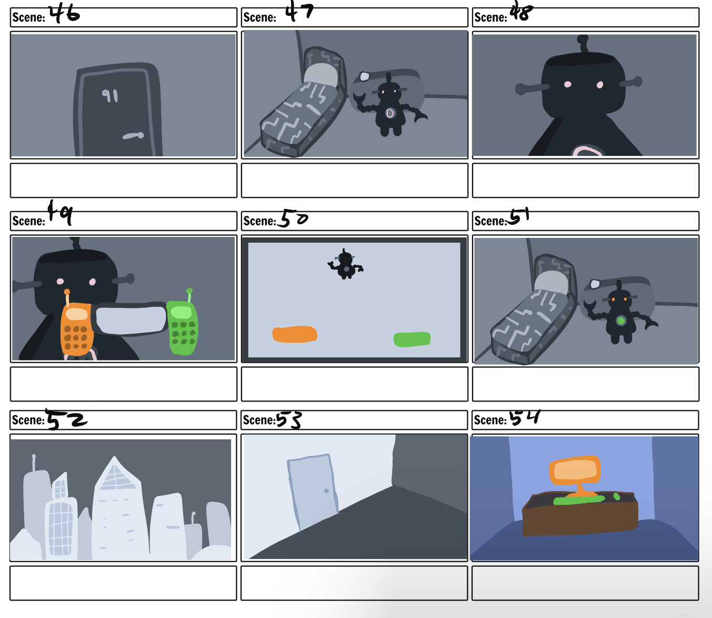

Artificially Blind
Game Design
Project Overview
Artificially Blind is a single player story and puzzle game where the user is able to play as a new resident of Nexus City: the world's first city ran completely on Artificial Intelligence. As the user progresses through the city and interacts with the advanced technology, they begin to realize that this technology may not be optimized for everyone.The user can solve puzzles in order to fix biased AI Systems and learn about different viewpoints towards AI from other residents of Nexus City. The game interactions were created in GDevelop5 with assets that were made using Adobe Illustrator and Adobe Photoshop.

Game Mockup
Objective
The objective of this project was to bring issues of racial bias in AI to light through an immersive story game that would deeply resonate with the player. By adopting a first-person perspective, the game aimed to provide users with a unique opportunity to experience the realities of biased AI systems as a black person would in a city setting. The primary goals of the project were:
-Raise Awareness: The game sought to raise awareness about the presence and impact of racial bias in AI systems by allowing players to witness and confront instances of bias firsthand. Through interactive storytelling, the objective was to engage players emotionally and intellectually, fostering a deeper understanding of the issue.
-Empathy and Perspective-Taking: By simulating the experiences of a black individual encountering biased AI systems, the game aimed to promote empathy and perspective-taking among players. The intention was to challenge preconceived notions and biases by providing a relatable and immersive experience that could lead to greater empathy and understanding.
-Education and Critical Thinking: Alongside the narrative elements, the game aimed to provide educational value by offering information and insights into the mechanisms and implications of bias in AI. Through gameplay interactions and supplementary materials, players would be encouraged to think critically about the broader societal implications of biased AI and consider potential solutions.
-Inspire Dialogue and Action: Ultimately, the objective was to spark dialogue and inspire action around the issue of bias in AI. By presenting the subject matter in an engaging and interactive manner, the game aimed to encourage players to share their experiences, thoughts, and ideas, fostering a larger conversation and potential avenues for addressing bias in AI systems.
By achieving these objectives, the game aimed to contribute to a broader understanding of bias in AI, promote social awareness, and potentially influence the development and deployment of more equitable and unbiased AI systems
Research Process
In order to develop a comprehensive understanding of bias in AI and its implications, an extensive research process was undertaken. This involved delving into various scholarly works, documentaries, and engaging with experts in the field. By exploring a range of sources, including the book "Race After Technology" by Ruha Benjamin and the documentary "Coded Bias," as well as researching the Algorithmic Justice League, valuable insights were gained into the multifaceted nature of bias in AI systems. Additionally, attending a thought-provoking talk with Timnit Gebru titled "Science for Humanity: Navigating Through Ethical Pitfalls" on October 6th, 2022, provided further perspectives and enriched the research journey.
Race After Technology by Ruha Benjamin: In her novel, Race after Technology, Ruha Benjamin examines the intersection of race, technology, and bias in our increasingly digital world. She cites many real world and fictional instances of technology perpetuating and amplifying racial inequalities, affecting various aspects of society such as education, employment, policing, and healthcare. The AI systems in this novel directly aided in providing a framework for the systems the user interacts with in Artificially blind. PredPol is a real predictive policing software that is most commonly used in Los Angeles and officers are given printouts of jurisdiction maps that are covered with red square boxes that indicate where crime is supposed to occur throughout the day.
Coded Bias: "Coded Bias" is a powerful documentary that explores the hidden biases and ethical implications within artificial intelligence systems. The film follows the journey of MIT Media Lab researcher Joy Buolamwini as she investigates and uncovers the discriminatory practices of facial recognition technology. Not only did this documentary provide inspiration for the face recognition bias in Artificially Blind, but it also aided in giving insight into how to prevent these biases from happening and how to correct racial bias in facial recognition systems.
The Algorithmic Justice League: The Algorithmic Justice League (AJL) is an organization dedicated to addressing the social implications of artificial intelligence (AI) and algorithmic systems. Founded by Joy Buolamwini, an AI researcher and activist, the AJL focuses on promoting transparency, accountability, and equity in the design and deployment of AI technologies. Rearching the AJL gave me inspiration to create an anti-AI organization within Nexus City and allowed me to see multiple viewpoints towards AI that I could integrate into Artificially Blind.
Science for Humanity: Navigating Through Ethical Pitfalls: Timnit Gebru is a prominent computer scientist, researcher, and advocate known for her work in the field of artificial intelligence (AI) ethics. Gebru's research focuses on issues related to bias, fairness, and accountability in AI systems, particularly as they intersect with societal issues, ethics, and human rights. In her talk, Gebru shed light on another viewpoint towards AI with the DAIR institute which focuses on four values which are diversity, accountability, innovation and resilience. This provided a basis for another viewpoint towards AI that AI is inherently bad and there is no such thing as AI for good.
Storyboarding
A storyboard is a visual representation of a game's narrative, serving as a crucial tool in the game development process. It allows designers to outline and visualize the sequence of events, key moments, and interactions that form the foundation of the game's story. By creating a storyboard, I was able to map out the flow and structure of the narrative, ensuring a coherent and engaging experience for players

Artificially Blind Storyboards
Design Process
Once I had finished storyboarding the game, I prioritized finalizing the designs of each character before they would be made into a game asset. I made the design choice to have those with ideals that went against that of Nexus City to have a brightly saturated color scheme that would contrast heavily against the monochromatic desaturated blues of Nexus City.
Artificially Blind Character Designs
Final Game
The final game is available to play on GDevleop's game website and can be played on PC or touch screen.
Play Artificially Blind Here